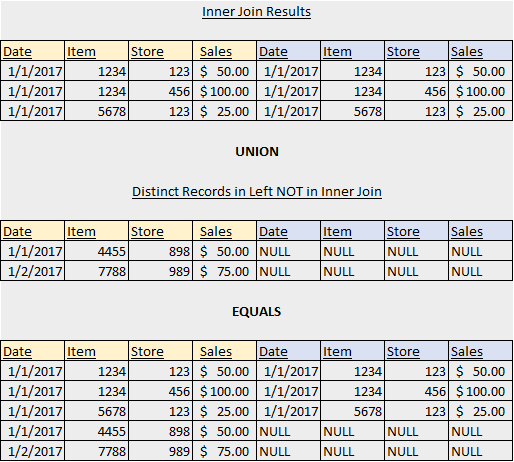
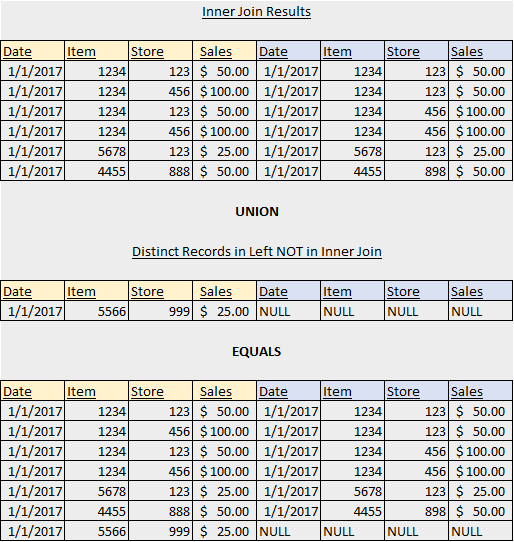
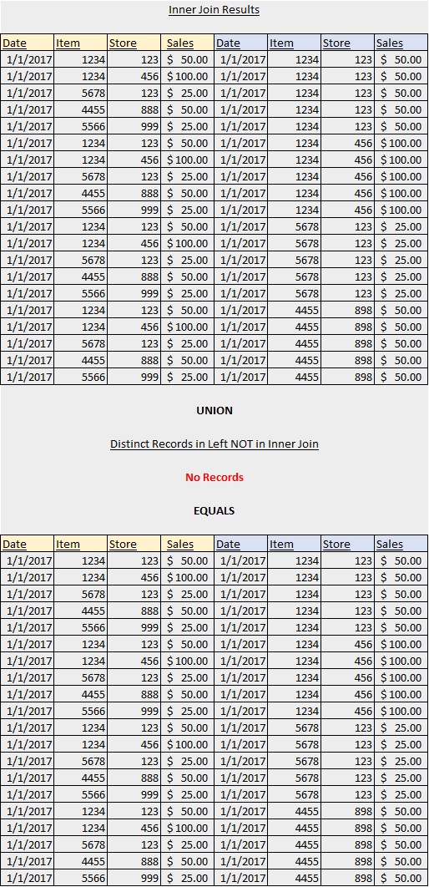

Section 4: Right & Left Joins - Deriving from Inner Join Operations
In this section, we will go through the same examples from the 'Inner Join Operations: Deriving from Cartesian Product' section except that we will perform LEFT OUTER JOINs instead of INNER JOINs. As mentioned at the beginning of the post, the results of any LEFT OUTER JOIN operation can be derived by the following:
Results of INNER JOIN operation
UNION
Records in Left table NOT in INNER JOIN results
Joining on All 3 Fields
Since there are two records in the Left Table (the Production Table) that are NOT in the INNER JOIN result set, the LEFT JOIN operations returns the following:
select *
from test.prod
left join test.qa
on test.prod.dt = test.qa.dt
and test.prod.item_nbr = test.qa.item_nbr
and test.prod.store_nbr = test.qa.store_nbr
;

Note that for the rows unique to the Left Table, the corresponding columns in the Right Table are assigned NULL values.
Joining on Only 2 Fields
Since there is one record in the Left Table (the Production Table) that is NOT in the INNER JOIN result set, the LEFT JOIN operations returns the following:
select *
from test.prod
left join test.qa
on test.prod.dt = test.qa.dt
and test.prod.item_nbr = test.qa.item_nbr
;

Joining on Only 1 Field
Since all of the records in the Left Table are present in the INNER JOIN result set, the LEFT JOIN operation produces the same result set as the INNER JOIN operation:
select *
from test.prod
left join test.qa
on test.prod.dt = test.qa.dt
;
